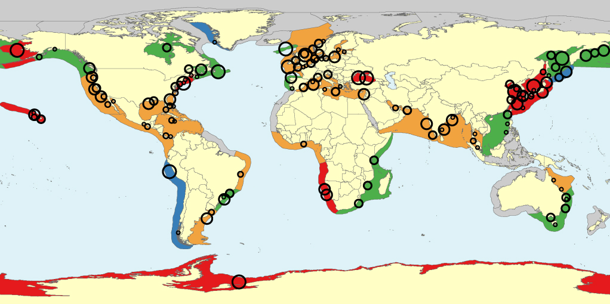

Jellyfish have drifted along on ocean currents for millions
of years, even before dinosaurs lived on the Earth. The jellylike creatures pulse
along on ocean currents and are abundant in cold and warm ocean water, in deep water,
and along coastlines. But despite their name, jellyfish aren't actually fish—they're invertebrates, or animals
with no backbones.
Jellyfish have tiny stinging cells in their tentacles to stun or
paralyze their prey before they eat them. Inside their bell-shaped
body is an opening that is its mouth. They eat and discard waste
from this opening.
As jellyfish squirt water from their mouths they are propelled
forward. Tentacles hang down from the smooth baglike body and
sting their prey.
Jellyfish stings can be painful to humans and sometimes very
dangerous. But jellyfish don't purposely attack humans. Most
stings occur when people accidentally touch a jellyfish, but if the
sting is from a dangerous species, it can be deadly. Jellyfish digest
their food very quickly. They wouldn't be able to float if they had
to carry a large, undigested meal around.
Jellyfish come in all sizes, ranging from coastal species that are smaller
than a grape to deep sea creatures that can be larger than blue whales!
With all of this biodiversity, there’s a lot to learn about jellyfish.
Jellyfish
Jellyfish Facts
| ECOLOGY |
TAXONOMY (Classification of Jellyfish Species) |
LIFE HISTORY AND BEHAVIOR | |||
|---|---|---|---|---|---|
| Diet | Jellyfish are like other cnidarians generally carnivorous (or parasitic), feeding on planktonic organisms, crustaceans, small fish, fish eggs and larvae, and other jellyfish, ingesting food and voiding undigested waste through the mouth. | Scyphozoa | Scyphozoa are sometimes called true jellyfish, though they are no more truly jellyfish than the others listed here. They have tetra-radial symmetry. Most have tentacles around the outer margin of the bowl-shaped bell, and long, oral arms around the mouth in the center of the subumbrella. | Life cycle | Jellyfish have a complex life cycle which includes both sexual and asexual phases, with the medusa being the sexual stage in most instances. Sperm fertilize eggs, which develop into larval planulae, become polyps, bud into ephyrae and then transform into adult medusae. In some species certain stages may be skipped. |
| Predation | Sea anemones,tunas, sharks, swordfish, sea turtles and penguins | Cubozoa | Cubozoa (box jellyfish) have a (rounded) box-shaped bell, and their velarium assists them to swim more quickly. Box jellyfish may be related more closely to scyphozoan jellyfish than either are to the Hydrozoa. | Lifespan | Little is known of the life histories of many jellyfish as the places on the seabed where the benthic forms of those species live have not been found. However, an asexually reproducing strobila form can sometimes live for several years, producing new medusae (ephyra larvae) each year. |
| Symbiosis | Some small fish are immune to the stings of the jellyfish and live among the tentacles, serving as bait in a fish trap; they are safe from potential predators and are able to share the fish caught by the jellyfish. | Hydrozoa | Hydrozoa medusae also have tetra-radial symmetry, nearly always have a velum (diaphragm used in swimming) attached just inside the bell margin, do not have oral arms, but a much smaller central stalk-like structure, the manubrium, with terminal mouth opening, and are distinguished by the absence of cells in the mesoglea. Hydrozoa show great diversity of lifestyle; some species maintain the polyp form for their entire life and do not form medusae at all (such as Hydra, which is hence not considered a jellyfish), and a few are entirely medusal and have no polyp form. | Locomotion | Using the moon jelly Aurelia aurita as an example, jellyfish have been shown to be the most energy efficient swimmers of all animals. They move through the water by radially expanding and contracting their bell-shaped bodies to push water behind them. They pause between the contraction and expansion phases to create two vortex rings. |
| Blooms | Jellyfish form large masses or blooms in certain environmental conditions of ocean currents, nutrients, sunshine, temperature, season, prey availability, reduced predation and oxygen concentration. | Staurozoa | Staurozoa (stalked jellyfish) are characterized by a medusa form that is generally sessile, oriented upside down and with a stalk emerging from the apex of the "calyx" (bell), which attaches to the substrate. At least some Staurozoa also have a polyp form that alternates with the medusoid portion of the life cycle. Until recently, Staurozoa were classified within the Scyphozoa. | Largest and smallest | |
| Habitats | Most jellyfish are marine animals, although a few hydromedusae inhabit freshwater. | Fossil history |
Jellyfish range from about one millimeter in bell height
and diameter,[50] to nearly 2 metres (6+1⁄2 ft) in bell
height and diameter; the tentacles and mouth parts usually
extend beyond this bell dimension. The smallest jellyfish are the peculiar creeping jellyfish in the genera Staurocladia and Eleutheria, which have bell disks from 0.5 millimetres (1⁄32 in) to a few millimeters in diameter. The lion's mane jellyfish, Cyanea capillata, was long-cited as the largest jellyfish, and arguably the longest animal in the world, with fine, thread-like tentacles that may extend up to 36.5 m (119 ft 9 in) long (though most are nowhere near that large). |
||
| Parasites | Jellyfish are hosts to a wide variety of parasitic organisms. They act as intermediate hosts of endoparasitic helminths, with the infection being transferred to the definitive host fish after predation. | Since jellyfish have no hard parts, fossils are rare. The oldest conulariid scyphozoans appeared between 635 and 577 mya in the Neoproterozoic of the Lantian Formation in China; others are found in the youngest Ediacaran rocks of the Tamengo Formation of Brazil, c. 505 mya, through to the Triassic. Cubozoans and hydrozoans appeared in the Cambrian of the Marjum Formation in Utah, USA, c. 540 mya. | |||
|  | Map of population trends of native and invasive jellyfish. Circles represent data records; larger circles denote higher certainty of findings. | ||
| Increase (high certainty) | |||
| Increase (low certainty) | |||
| Stable/variable | |||
| Decrease | |||
| No data | |||